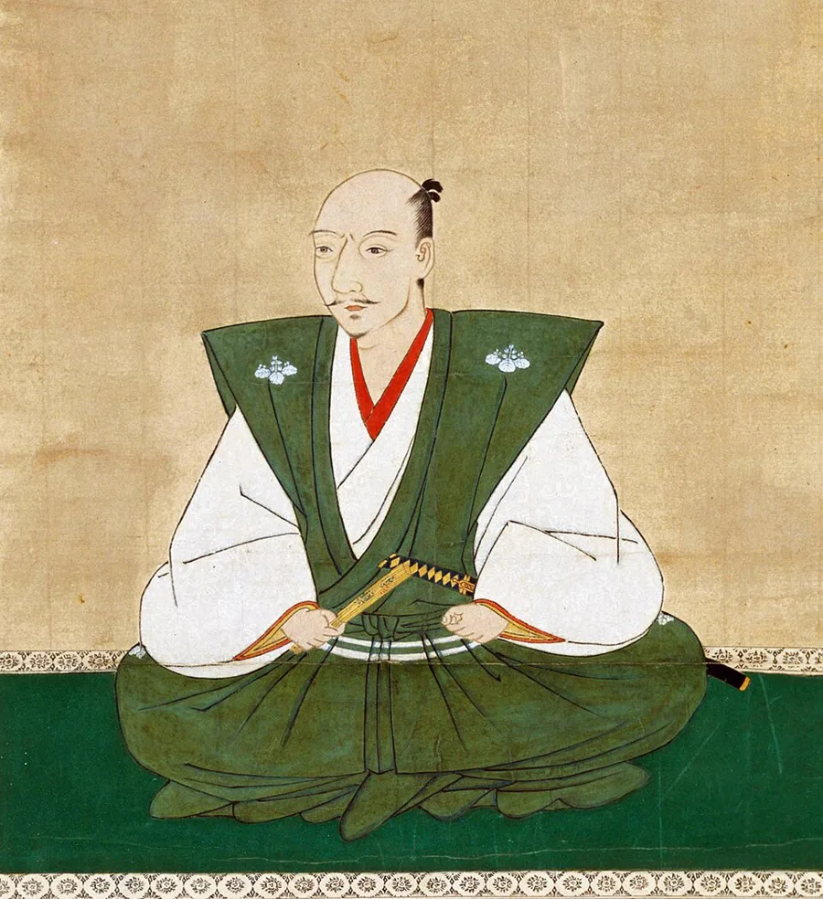

織田信長戦国編 其の七
「大うつけ」と呼ばれた若者が、天下にいちばん近づきます。
生涯の要点
- 1534年、尾張（今の愛知県西部）の織田信秀の子として生まれました
- 若いころは奔放で変わった身なりを好み、「うつけ」と評されたと伝わります
- 美濃の斎藤道三の娘を妻に迎えました
- 父の死後、家を継ぎました
- 1560年、桶狭間で今川義元を討ちました
- 1567年、美濃の斎藤氏を滅ぼし、「天下布武」の印を使いはじめました
- 1568年、足利義昭を立てて京へのぼりました
- 1575年、長篠で武田勝頼（信玄の子）を徳川家康とともに破りました
- 1576年から、琵琶湖のほとりに安土城を築きました
- 1582年、本能寺で家臣の明智光秀に攻められ、49歳（数え年）で亡くなりました
よくある疑問
「うつけ」と呼ばれたのはなぜ？
若いころは奔放で変わった身なりを好み、「うつけ」と評されたと伝わります。
「天下布武」の印はいつから？
1567年、美濃の斎藤氏を滅ぼしたころから使いはじめました。

織田信長像（狩野宗秀筆・長興寺所蔵）
60秒で見る
出典と画像
参考：コトバンク「織田信長」（日本大百科全書・改訂新版 世界大百科事典・デジタル版 日本人名大辞典+Plus）
肖像：織田信長像（狩野宗秀筆・長興寺所蔵）／Wikimedia Commons／パブリックドメイン
写真：安土城跡 撮影 Akonnchiroll／Wikimedia Commons／CC BY-SA 4.0（https://creativecommons.org/licenses/by-sa/4.0/）を縦長に配置して使用
動画のナレーション：VOICEVOX:青山龍星